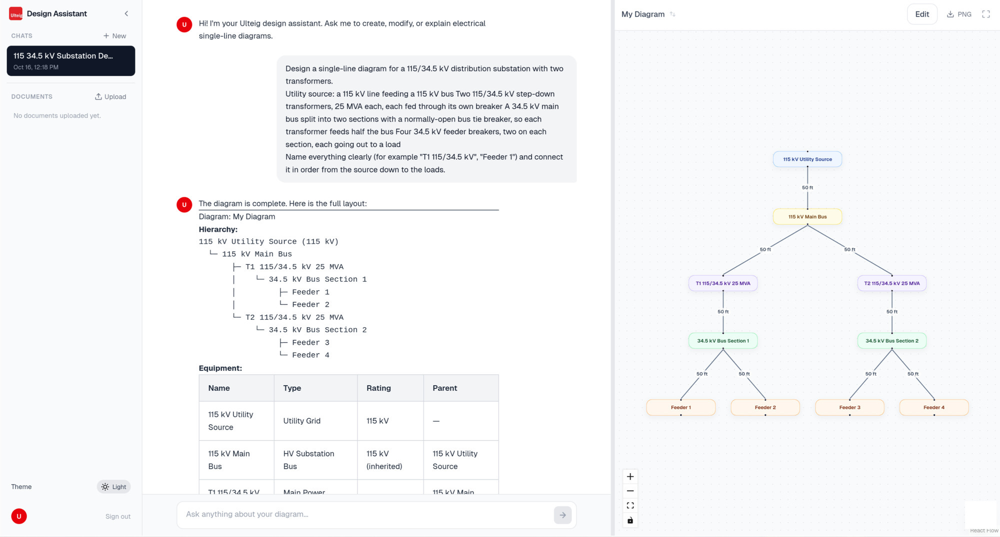

AI Substation Design System
Our NDSU senior capstone was a full-stack web application for Ulteig, an engineering consulting firm. An engineer describes a substation in a chat window and the application drafts a single-line diagram, which they can then refine with follow-up prompts, using project requirements and uploaded documents as context. The goal is a usable baseline design early in a project, so the client has something concrete to respond to sooner.

- Team
- 4
- Scrum throughout
- Built with
- Ulteig
- Software engineering team
- My part
- RAG + DB
- And the frontend design
My part
I was responsible for the RAG pipeline, the database design and the frontend design. The retrieval pipeline is what lets the agent draw on a project's requirements and uploaded documents when it drafts or changes a diagram. Our team of four worked in Scrum sprints alongside Ulteig's software engineering team for the length of the project.
How the agent works
A LangGraph agent running Claude first decides whether a request is a design change or a question about the current design. Changes go to an edit step that updates the diagram. Questions go to a step that answers from the diagram's current state. The agent reaches the design only through an MCP server built with FastMCP, so the model works with a defined set of tools rather than querying the database directly.
Data and frontend
Equipment, cables, buses and diagrams are modeled in SQLAlchemy on PostgreSQL, with Alembic for migrations and pgvector for document retrieval. A FastAPI backend serves the agent, and the frontend is Next.js with React and Tailwind.